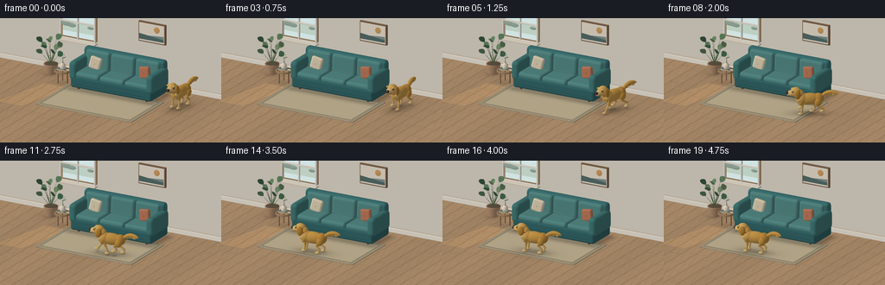
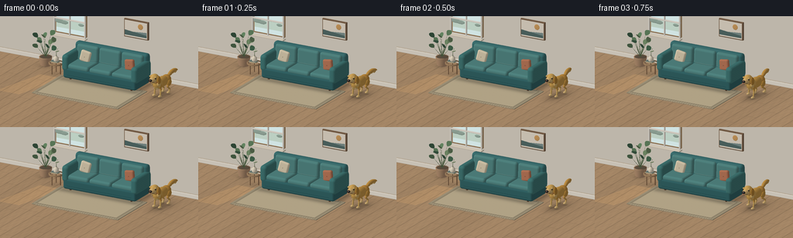

CODING AGENTS AS PIXEL WORLD MODELS
traex/GPT-6.1-Sol · dynamic_spatial_relationship_0003
点击播放 · 原生 RGB 像素
逐轮保存的候选
回放视频、检查图与代码变化。
每份候选均可单独播放。实际图片检查记录在下方工具轨迹中。
候选 01播放与检查图
点击播放 · 原生 RGB 像素


展开代码变化
--- 上一保存版本
+++ 本次保存版本
@@ -0,0 +1,476 @@
+"""Procedural RGB animation. All geometry, materials and motion are authored here.
+Uses only numpy/Pillow and a small, self-contained orthographic rasterizer.
+"""
+import math
+from pathlib import Path
+import numpy as np
+from PIL import Image
+from artifact_io import save
+
+OUT = Path(__file__).resolve().parent
+W, H, SS = 256, 144, 3
+RW, RH = W*SS, H*SS
+rng = np.random.default_rng(29)
+
+# The world uses y-up. The sofa faces +z.
+target=np.array([0., .88, .3])
+eye=np.array([6.,5.3,11.])
+F=(target-eye); F/=np.linalg.norm(F)
+R=np.cross(F,[0,1,0]); R/=np.linalg.norm(R)
+U=np.cross(R,F)
+S=RW/10.7
+LIGHT=np.array([-0.55,0.85,0.75]); LIGHT/=np.linalg.norm(LIGHT)
+VIEW=-F
+HALF=(VIEW+LIGHT); HALF/=np.linalg.norm(HALF)
+
+def rgb(h):
+ return np.array([int(h[i:i+2],16) for i in (0,2,4)],float)/255
+
+# Material IDs: 0 ordinary; 1 wood floor; 2 fabric; 3 rug; 4 leaves;
+# 5 dog fur; 6 glossy eyes/nose; 7 glass; 8 framed print.
+meshes=[]
+def add(v,n,f,col,mat=0):
+ meshes.append((np.asarray(v,float),np.asarray(n,float),np.asarray(f,np.int32),rgb(col) if isinstance(col,str) else np.asarray(col),mat))
+
+def rot(ax=0,ay=0,az=0):
+ a,b,c=ax,ay,az
+ X=np.array([[1,0,0],[0,np.cos(a),-np.sin(a)],[0,np.sin(a),np.cos(a)]])
+ Y=np.array([[np.cos(b),0,np.sin(b)],[0,1,0],[-np.sin(b),0,np.cos(b)]])
+ Z=np.array([[np.cos(c),-np.sin(c),0],[np.sin(c),np.cos(c),0],[0,0,1]])
+ return Z@Y@X
+
+def sphere(center,radii,color,mat=0,M=None,nu=20,nv=12):
+ if M is None: M=np.eye(3)
+ vs=[]; ns=[]; faces=[]
+ rad=np.array(radii)
+ for j in range(nv+1):
+ p=np.pi*j/nv
+ for i in range(nu):
+ q=2*np.pi*i/nu
+ d=np.array([np.sin(p)*np.cos(q),np.cos(p),np.sin(p)*np.sin(q)])
+ vs.append(M@(d*rad)+center)
+ n=M@(d/rad); ns.append(n/np.linalg.norm(n))
+ for j in range(nv):
+ for i in range(nu):
+ a=j*nu+i;b=j*nu+(i+1)%nu;c=(j+1)*nu+i;d=(j+1)*nu+(i+1)%nu
+ faces.extend([(a,c,b),(b,c,d)])
+ add(vs,ns,faces,color,mat)
+
+def box(center,dims,radius,color,mat=0,M=None):
+ if M is None:M=np.eye(3)
+ h=np.array(dims)/2
+ radius=min(radius,min(h)*.98)
+ grid=[]
+ for a in h:
+ grid.append(np.unique(np.array([-a,-a+radius*.18,-a+radius*.55,-a+radius,0,a-radius,a-radius*.55,a-radius*.18,a])))
+ vs=[];ns=[];fs=[]
+ for axis in range(3):
+ other=[i for i in range(3) if i!=axis]
+ for side in [-1,1]:
+ start=len(vs); g1,g2=grid[other[0]],grid[other[1]]
+ for u in g1:
+ for v in g2:
+ p=np.zeros(3);p[axis]=h[axis]*side;p[other[0]]=u;p[other[1]]=v
+ cl=np.clip(p,-h+radius,h-radius)
+ n=p-cl;n/=np.linalg.norm(n)
+ vv=cl+radius*n
+ vs.append(M@vv+center);ns.append(M@n)
+ for i in range(len(g1)-1):
+ for j in range(len(g2)-1):
+ a=start+i*len(g2)+j;b=a+len(g2);c=a+1;d=b+1
+ fs.extend([(a,b,c),(b,d,c)])
+ add(vs,ns,fs,color,mat)
+
+def tube(points,radii,color,mat=0,sides=10):
+ points=np.array(points,float)
+ radii=np.broadcast_to(radii,(len(points),))
+ vs=[];ns=[];fs=[]
+ for j,p in enumerate(points):
+ tang=points[min(j+1,len(points)-1)]-points[max(0,j-1)]
+ tang/=np.linalg.norm(tang)
+ axis=np.array([0.,1.,0.])
+ if abs(tang[1])>.95:axis=np.array([1.,0.,0.])
+ a=np.cross(tang,axis);a/=np.linalg.norm(a);b=np.cross(tang,a)
+ for i in range(sides):
+ n=a*np.cos(2*np.pi*i/sides)+b*np.sin(2*np.pi*i/sides)
+ vs.append(p+radii[j]*n);ns.append(n)
+ for j in range(len(points)-1):
+ for i in range(sides):
+ a=j*sides+i;b=j*sides+(i+1)%sides;c=(j+1)*sides+i;d=(j+1)*sides+(i+1)%sides
+ fs.extend([(a,b,c),(b,d,c)])
+ # Flat caps.
+ for j,sgn in [(0,-1), (len(points)-1,1)]:
+ k=len(vs);vs.append(points[j]);d=points[min(j+1,len(points)-1)]-points[max(0,j-1)];d/=np.linalg.norm(d);ns.append(d*sgn)
+ for i in range(sides):fs.append((k,j*sides+i,j*sides+(i+1)%sides))
+ add(vs,ns,fs,color,mat)
+
+def capsule(a,b,r,color,mat=0,r2=None):
+ if r2 is None:r2=r
+ tube([a,b],[r,r2],color,mat,10)
+ sphere(np.array(a),[r,r,r],color,mat,nu=12,nv=8)
+ sphere(np.array(b),[r2,r2,r2],color,mat,nu=12,nv=8)
+
+def plane(v,col,mat=0):
+ v=np.array(v,float)
+ n=np.cross(v[1]-v[0],v[2]-v[0]);n/=np.linalg.norm(n)
+ add(v,np.tile(n,(len(v),1)),[(0,1,2),(0,2,3)],col,mat)
+
+def lathe(center,levels,color,mat=0,N=28):
+ v=[];n=[];f=[]
+ for j,(y,r) in enumerate(levels):
+ lo=max(0,j-1);hi=min(len(levels)-1,j+1)
+ dy=levels[hi][0]-levels[lo][0];dr=levels[hi][1]-levels[lo][1]
+ for i in range(N):
+ a=i*2*np.pi/N
+ v.append(np.array(center)+[r*np.cos(a),y,r*np.sin(a)])
+ norm=np.array([np.cos(a),-dr/max(dy,.001),np.sin(a)]);norm/=np.linalg.norm(norm);n.append(norm)
+ for j in range(len(levels)-1):
+ for i in range(N):
+ a=j*N+i;b=j*N+(i+1)%N;c=a+N;d=b+N;f.extend([(a,b,c),(b,c,d)])
+ add(v,n,f,color,mat)
+
+def torus(center,ra,rb,thick,color,M=None):
+ if M is None:M=np.eye(3)
+ v=[];n=[];fs=[];na=28;nb=8
+ for i in range(na):
+ a=2*np.pi*i/na
+ for j in range(nb):
+ b=2*np.pi*j/nb
+ p=np.array([(ra+thick*np.cos(b))*np.cos(a),thick*np.sin(b),(rb+thick*np.cos(b))*np.sin(a)])
+ nn=np.array([np.cos(b)*np.cos(a),np.sin(b),np.cos(b)*np.sin(a)])
+ v.append(M@p+center);n.append(M@nn)
+ for i in range(na):
+ for j in range(nb):
+ a=i*nb+j;b=((i+1)%na)*nb+j;c=i*nb+(j+1)%nb;d=((i+1)%na)*nb+(j+1)%nb
+ fs.extend([(a,b,c),(b,c,d)])
+ add(v,n,fs,color,0)
+
+# ---- A calm sunlit living room, without any moving background elements. ----
+plane([[-12,0,-5],[-12,0,14],[12,0,14],[12,0,-5]],'BC9872',1)
+plane([[-10,0,-2.15],[10,0,-2.15],[10,6,-2.15],[-10,6,-2.15]],'E9E0D0')
+box([0,.115,-2.09],[20,.23,.12],.018,'F5ECDD')
+box([0,.24,-2.12],[20,.024,.075],.009,'D3C5AF')
+
+# Window with a pale sky and a few distant foliage shapes, all within its frame.
+box([-3.05,2.62,-2.07],[1.95,1.79,.1],.035,'B49168')
+box([-3.05,2.62,-2.00],[1.78,1.62,.028],.004,'CEE2E3',7)
+box([-3.05,2.34,-1.975],[1.73,.52,.024],.002,'B8CCC0',7)
+for x,y,r in [(-3.73,2.46,.29),(-3.43,2.42,.25),(-2.38,2.43,.18)]:
+ sphere([x,y,-1.95],[r,r*.46,.014],'A5BCAD',nu=14,nv=8)
+for x in [-4.0,-3.05,-2.1]:
+ box([x,2.62,-1.90],[.075,1.83,.10],.014,'F3ECE0')
+for y in [1.72,2.62,3.52]:box([-3.05,y,-1.9],[1.98,.075,.1],.012,'F3ECE0')
+box([-3.05,1.68,-1.82],[2.12,.085,.34],.018,'F0E4D0')
+
+# Framed quiet abstract landscape over the couch.
+box([1.01,2.77,-2.035],[1.51,1.04,.12],.027,'81654C')
+box([1.01,2.77,-1.961],[1.39,.92,.025],.006,'F3E8D6',8)
+sphere([1.30,2.97,-1.94],[.16,.16,.012],'D9A361',nu=24,nv=12)
+plane([[.34,2.40,-1.93],[1.69,2.40,-1.93],[1.69,2.70,-1.93],[.34,2.59,-1.93]],'829793',8)
+plane([[.34,2.40,-1.917],[1.69,2.40,-1.917],[1.69,2.54,-1.917],[.34,2.69,-1.917]],'556F6B',8)
+
+# Sofa: substantial rounded arms, distinct seat and back cushions, piping, legs.
+for x in [-1.89,1.89]:
+ for z in [-1.14,.10]:
+ tube([[x,.04,z],[x*.98,.33,z*.98]],[.055,.078],'614B38',sides=12)
+box([0,.43,-.54],[4.50,.59,1.69],.12,'326567',2)
+box([0,1.20,-1.21],[4.49,1.24,.41],.16,'3B7273',2)
+for x in [-1.38,0,1.38]:
+ box([x,.79,-.37],[1.335,.29,1.25],.13,'538B87',2)
+ # The line separating the cushion's top and edge.
+ tube([[x-.54,.775,.239],[x+.54,.775,.239]],.009,'6D9991',2)
+ box([x,1.30,-.983],[1.334,.92,.33],.14,'528985',2,M=rot(-.075,0,0))
+ tube([[x-.49,.977,-.787],[x+.49,.977,-.787]],.007,'779F97',2)
+for x in [-2.13,2.13]:
+ box([x,.99,-.51],[.42,.92,1.67],.17,'407976',2)
+ tube([[x-.03,1.427,-1.08],[x-.03,1.437,.065]],.008,'719B94',2)
+box([0,.343,.316],[3.99,.025,.018],.006,'28585A',2)
+# Two soft accent pillows, one warm linen, one terra-cotta.
+box([-1.41,1.20,-.72],[.60,.63,.21],.105,'E4D5B6',2,M=rot(-.15,.08,-.21))
+box([1.33,1.19,-.71],[.60,.61,.22],.108,'B87455',2,M=rot(-.16,-.08,.17))
+# Subtle button dimples.
+sphere([-1.41,1.2,-.585],[.026,.027,.015],'BCAE90',nu=12,nv=8)
+sphere([1.33,1.19,-.573],[.025,.025,.014],'965A43',nu=12,nv=8)
+
+# Large woven rug establishes the foreground plane.
+box([0,.031,1.36],[5.35,.05,3.23],.12,'CDBC99',3)
+for x in np.linspace(-2.48,2.48,63):
+ z=3.004
+ tube([[x,.034,z],[x+.018*np.sin(x*7),.026,z+.12]],.007,'D4C5A6',sides=5)
+
+# A small oak side table and an understated ceramic vase.
+for a in [0,2.1,4.2]:
+ xx=-3.05+.26*np.cos(a);zz=-.40+.26*np.sin(a)
+ capsule([xx,.035,zz],[xx,.62,zz],.025,'806045')
+lathe([-3.05,0,-.40],[(.58,.41),(.65,.41),(.665,.38)],'A58460')
+box([-3.10,.697,-.39],[.44,.055,.30],.01,'D0BE98')
+box([-3.10,.727,-.39],[.43,.018,.29],.004,'6A7E78')
+lathe([-3.04,.736,-.38],[(0,.11),(.06,.15),(.21,.14),(.27,.07),(.31,.065)],'EEE2CA')
+tube([[-3.04,1.01,-.38],[-3.05,1.25,-.43],[-2.98,1.45,-.44]],.012,'758062')
+sphere([-3.00,1.29,-.43],[.13,.027,.05],'81936D',M=rot(0,0,.4),nu=14,nv=8)
+
+# A leafy plant sits well to the left so it cannot obscure the dog's path.
+lathe([-4.17,0,-1.23],[(.03,.26),(.08,.29),(.48,.35),(.51,.36),(.54,.35)],'BD9674')
+sphere([-4.17,.515,-1.23],[.31,.026,.31],'625443',nu=20,nv=8)
+for k in range(12):
+ a=k*2.399
+ end=np.array([-4.17+(.38+.12*np.sin(k))*np.cos(a),.98+.84*(k/12),-1.23+.35*np.sin(a)])
+ start=np.array([-4.17,.51,-1.23]);mid=start*.45+end*.55
+ tube([start,mid,end], [.012,.009,.003],'5E7450',sides=7)
+ # Individual pointed, curved broad leaves.
+ tip=end+np.array([.29*np.cos(a),.23,.27*np.sin(a)])
+ direction=tip-end
+ lateral=np.cross(direction,[0,0,1]);lateral/=np.linalg.norm(lateral)
+ v=[];n=[];f=[];N=8
+ for j in range(N+1):
+ t=j/N
+ center=end+direction*t+np.array([0,.08*np.sin(np.pi*t),0])
+ width=.15*np.sin(np.pi*t)**.7
+ for side in [-1,0,1]:
+ v.append(center+lateral*width*side+np.array([0,-.045*abs(side)*np.sin(np.pi*t),0]))
+ norm=np.cross(lateral,direction);norm/=np.linalg.norm(norm)
+ if norm[1]<0:norm=-norm
+ n.append(norm)
+ for j in range(N):
+ for i in range(2):
+ a=j*3+i;f.extend([(a,a+3,a+1),(a+1,a+3,a+4)])
+ add(v,n,f,['456B50','628560','75916A'][k%3],4)
+
+static_meshes=meshes.copy()
+
+class Renderer:
+ def __init__(self):
+ self.depth=np.full((RH,RW),np.inf,np.float32)
+ self.norm=np.zeros((RH,RW,3),np.float32)
+ self.color=np.zeros((RH,RW,3),np.float32)
+ self.mat=np.zeros((RH,RW),np.uint8)
+ def draw(self,mesh):
+ v,n,faces,col,mat=mesh
+ vx=(v-target)@R*S+RW/2
+ vy=RH/2-(v-target)@U*S
+ vz=(v-target)@F
+ for a,b,c in faces:
+ x0,x1,x2=vx[[a,b,c]];y0,y1,y2=vy[[a,b,c]]
+ den=(y1-y2)*(x0-x2)+(x2-x1)*(y0-y2)
+ if abs(den)<1e-7:continue
+ l=max(0,int(np.floor(min(x0,x1,x2))));r=min(RW-1,int(np.ceil(max(x0,x1,x2))))
+ top=max(0,int(np.floor(min(y0,y1,y2))));bot=min(RH-1,int(np.ceil(max(y0,y1,y2))))
+ if l>r or top>bot:continue
+ xx=np.arange(l,r+1,dtype=np.float32)[None,:]+.5
+ yy=np.arange(top,bot+1,dtype=np.float32)[:,None]+.5
+ w0=((y1-y2)*(xx-x2)+(x2-x1)*(yy-y2))/den
+ w1=((y2-y0)*(xx-x2)+(x0-x2)*(yy-y2))/den
+ w2=1-w0-w1
+ z=w0*vz[a]+w1*vz[b]+w2*vz[c]
+ dep=self.depth[top:bot+1,l:r+1]
+ mask=(w0>=-.00001)&(w1>=-.00001)&(w2>=-.00001)&(z<dep)
+ if not np.any(mask):continue
+ dep[mask]=z[mask]
+ normal=w0[...,None]*n[a]+w1[...,None]*n[b]+w2[...,None]*n[c]
+ self.norm[top:bot+1,l:r+1][mask]=normal[mask]
+ self.color[top:bot+1,l:r+1][mask]=col
+ self.mat[top:bot+1,l:r+1][mask]=mat
+ def shade(self,root=None,direction=None,feet=None):
+ norm=self.norm/(np.linalg.norm(self.norm,axis=2,keepdims=True)+1e-8)
+ light=.57+.39*np.maximum(0,norm@LIGHT)
+ # Very soft daylight reflected from the wall.
+ light+=.045*np.maximum(0,norm@np.array([-.3,.25,-.7]))
+ col=self.color.copy()
+ yy,xx=np.mgrid[:RH,:RW]
+ world=target+((xx+.5-RW/2)/S)[...,None]*R+((RH/2-yy-.5)/S)[...,None]*U+self.depth[...,None]*F
+ x,y,z=world[:,:,0],world[:,:,1],world[:,:,2]
+ tex=np.sin(x*191+y*241+z*117)*np.sin(x*93-y*132+z*217)
+ fabric=(self.mat==2)
+ col[fabric]*=(1+.015*tex[fabric,None])
+ fur=(self.mat==5)
+ col[fur]*=(1+.017*tex[fur,None])
+ floor=(self.mat==1)
+ board=np.floor((x+10)/.64)
+ lane=np.mod(x+10,.64)
+ grain=.015*np.sin(z*5.6+np.sin(x*19)*2)+.012*np.sin(z*15+x*48)
+ grain+=.022*np.sin(board*93.32)
+ col[floor]*=(1+grain[floor,None])
+ seam=(lane<.012)|(lane>.628)
+ end=np.mod(z+np.sin(board*31)*3,3.4)<.013
+ col[floor& (seam|end)]*=.78
+ # Slightly stronger grain near a plank's edges.
+ col[floor]*=(1-.045*np.exp(-lane[floor,None]*20))
+ rug=self.mat==3
+ border=(np.abs(x)>2.43)|(np.abs(z-1.36)>1.395)
+ border2=(np.abs(x)>2.53)|(np.abs(z-1.36)>1.49)
+ col[rug&border]*=.81
+ col[rug&border2]*=1.11
+ weave=.018*np.sin(x*245)*np.sin(z*233)+.016*np.sin(z*73)
+ col[rug]*=1+weave[rug,None]
+ # Subtle regularly spaced woven dashes in the rug border.
+ stitches=((np.sin(x*45)>.58)&(np.abs(z-1.36)>1.42))|((np.sin(z*45)>.58)&(np.abs(x)>2.47))
+ col[rug&stitches]*=.88
+ leaves=self.mat==4
+ col[leaves]*=(1+.025*tex[leaves,None])
+ # Soft ambient/contact shadows, evaluated in world space on ground.
+ ground=floor|rug
+ dx=np.maximum(np.abs(x)-2.20,0)
+ dz=np.maximum(np.abs(z+.53)-.78,0)
+ shadow=.23*np.exp(-(dx/.29)**2-(dz/.32)**2)
+ shadow+=.17*np.exp(-((x+4.17)/.43)**2-((z+1.23)/.42)**2)
+ shadow+=.11*np.exp(-((x+3.05)/.51)**2-((z+.40)/.46)**2)
+ if root is not None:
+ ddx=x-root[0];ddz=z-root[2]
+ forward=ddx*direction[0]+ddz*direction[2]
+ side=ddx*direction[2]-ddz*direction[0]
+ shadow+=.23*np.exp(-(side/.39)**2-(forward/.81)**2)
+ shadow+=.07*np.exp(-(side/.64)**2-(forward/1.02)**2)
+ for foot in feet:
+ shadow+=.16*np.exp(-((x-foot[0])/.105)**2-((z-foot[2])/.14)**2)
+ light[ground]*=1-np.clip(shadow[ground],0,.53)
+ # Daylight: low-contrast diagonal rectangular patch on the oak floor.
+ sun=(np.abs((x+3.35)+.23*(z-1.2))<.68)&(z>.08)&(z<3.45)&floor
+ col[sun]*=np.array([1.10,1.08,1.035])
+ result=col*light[...,None]
+ spec=np.maximum(0,norm@HALF)**35
+ gloss=self.mat==6
+ result[gloss]+=spec[gloss,None]*.38
+ glass=self.mat==7
+ result[glass]=col[glass]*.96+np.array([.035,.035,.028])
+ # A soft filmic response, not flat primary-colored primitives.
+ result=np.clip(result,0,1)
+ result=np.power(result,.96)
+ return (result*255+.5).astype(np.uint8)
+
+# ---- Articulated young golden retriever. All geometry is local until posed. ----
+def dog(root,direction,phase,activity,time):
+ global meshes
+ meshes=[]
+ bounce=.055*activity*np.sin(2*phase-.3)
+ pitch=.045*activity*np.sin(phase)
+ yaw=np.arctan2(direction[0],direction[2])
+ M=rot(pitch,yaw,0)
+ base=np.array(root)+[0,bounce,0]
+ def sp(c,r,col='CA943E',mat=5,rotlocal=None,nu=18,nv=10):
+ if rotlocal is None:rotlocal=np.eye(3)
+ sphere(M@np.array(c)+base,r,col,mat,M=M@rotlocal,nu=nu,nv=nv)
+ def tu(points,r,col='BD8331',mat=5):
+ tube([M@np.array(p)+base for p in points],r,col,mat,sides=10)
+ def cap(a,b,r,col='C99748',r2=None):
+ capsule(M@np.array(a)+base,M@np.array(b)+base,r,col,5,r2=r2)
+ def tr(c):return M@np.array(c)+base
+ # Long body, rounded chest, and muscular haunches rather than a toy sphere.
+ sp([0,.76,-.02],[.255,.30,.58],'CE9A47',nu=24,nv=14)
+ sp([0,.775,.36],[.265,.325,.285],'D5A452',nu=22,nv=12)
+ sp([0,.77,-.45],[.265,.275,.27],'C18B3C')
+ sp([0,.64,.36],[.225,.21,.235],'DDB76F')
+ sp([0,.975,.46],[.208,.29,.235],'D2A04D',rotlocal=rot(.26,0,0))
+ # Neck ruff and chest feathers.
+ for side in [-1,1]:
+ sp([side*.176,.80,.485],[.085,.15,.15],'DAB168',rotlocal=rot(.2,0,side*.3),nu=14,nv=8)
+ for j in range(3):
+ sp([(j-1)*.089,.59,.48],[.06,.11,.092],'E4C386',nu=12,nv=8)
+ # Fluffy curved tail, lifted and wagging gently.
+ wag=.11*np.sin(time*7+.4)*(1+.45*activity)
+ tail=[]; rr=[]
+ A=np.array([0,.84,-.56]);B=np.array([wag*.25,1.14,-.84]);C=np.array([wag,1.18,-1.14]);D=np.array([wag*1.6,1.05,-1.42])
+ for t in np.linspace(0,1,10):
+ p=(1-t)**3*A+3*(1-t)**2*t*B+3*(1-t)*t*t*C+t**3*D
+ tail.append(p);rr.append(.085*np.sin(np.pi*t)**.5+.028*(1-t)+.008)
+ tu(tail,rr,'C89443')
+ for j in range(3,8,2):
+ p=tail[j]+[0,-.06,.015]
+ sp(p,[.066,.105,.12],'D7AD62',rotlocal=rot(.52,0,0),nu=12,nv=8)
+ # Four legs: diagonal gait, bending knees, grounded rounded paws.
+ feet=[]
+ for front in [False,True]:
+ for side in [-1,1]:
+ offset=(0 if side==1 else np.pi)+(0 if front else np.pi*.76)
+ ph=phase+offset
+ stride=.32*activity*np.sin(ph)
+ lift=.18*activity*max(0,np.cos(ph))**1.5
+ ax=side*.191
+ z0=.385 if front else -.425
+ foot=np.array([ax,.094+lift,z0+stride])
+ shoulder=np.array([ax,.76 if front else .705,z0])
+ if front:
+ knee=np.array([ax,.42+lift*.22,z0-.045+stride*.44])
+ sp([ax,.68,z0],[.087,.18,.115],'C89340')
+ cap(shoulder,knee,.064,'CC9947',r2=.054)
+ cap(knee,foot,.050,'D5AB60',r2=.044)
+ else:
+ knee=np.array([ax,.43+lift*.31,z0+.125+stride*.32])
+ hock=np.array([ax,.235+lift*.5,z0-.070+stride*.77])
+ sp([ax,.645,z0],[.122,.215,.175],'C4903E',rotlocal=rot(-.22,0,0))
+ cap(shoulder,knee,.083,'C69243',r2=.061)
+ cap(knee,hock,.051,'D0A153',r2=.045)
+ cap(hock,foot,.043,'D6AD64',r2=.040)
+ sp(foot+[0,-.019,.045],[.085,.064,.126],'E0BB7B',nu=16,nv=10)
+ # Tiny toe separations on the visible paw front.
+ for t in [-.025,.025]:
+ tu([foot+[t,-.015,.13],foot+[t,.018,.139]],.005,'AB8047')
+ feet.append(tr(foot))
+ # A bright coral leather collar and round brass identification tag.
+ torus(tr([0,.978,.49]),.206,.20,.025,'A6503E',M=M@rot(.25,0,0))
+ sp([0,.916,.702],[.047,.053,.014],'CAAA57',mat=0,rotlocal=rot(.2,0,0),nu=16,nv=10)
+ # Head with a distinct stop, bridge, broad muzzle and glossy black nose.
+ nod=.018*activity*np.sin(phase+.7)
+ hdy=-.01+nod
+ sp([0,1.159+hdy,.65],[.235,.249,.266],'D9AA59',nu=24,nv=16)
+ sp([0,1.102+hdy,.827],[.182,.163,.257],'E0BA77',nu=22,nv=14)
+ sp([0,1.041+hdy,.872],[.160,.088,.208],'C69D61',nu=20,nv=12)
+ sp([0,1.153+hdy,.941],[.14,.081,.128],'DDB473',nu=20,nv=12)
+ sp([0,1.139+hdy,1.055],[.115,.077,.072],'332C28',mat=6,nu=22,nv=12)
+ sp([-.031,1.174+hdy,1.099],[.027,.014,.008],'AAA497',mat=6,nu=12,nv=8)
+ # Eyes sit on the forward-facing cheek planes, with expressive brow ridges.
+ for side in [-1,1]:
+ sp([side*.181,1.225+hdy,.815],[.051,.058,.041],'9C743B',nu=18,nv=10)
+ sp([side*.190,1.228+hdy,.844],[.031,.038,.023],'292823',mat=6,rotlocal=rot(0,side*.3,0),nu=18,nv=12)
+ sp([side*.185-.007,1.242+hdy,.862],[.010,.012,.005],'F7ECDC',mat=6,nu=12,nv=8)
+ sp([side*.163,1.285+hdy,.799],[.069,.038,.068],'E1B76A',rotlocal=rot(0,0,side*.17),nu=16,nv=8)
+ # Floppy ears hang at either side and bounce while running.
+ earTilt=.12*activity*np.sin(phase+.4)
+ sp([side*.235,1.086+hdy,.584],[.089,.225,.155],'B68132',rotlocal=rot(earTilt,side*.08,side*.14),nu=22,nv=12)
+ sp([side*.272,1.032+hdy,.637],[.042,.125,.09],'C89443',rotlocal=rot(earTilt,0,side*.10),nu=16,nv=10)
+ # Curving smiling lip line.
+ tu([[side*.15,1.055+hdy,.805],[side*.16,1.030+hdy,.901],[side*.118,1.049+hdy,1.027]],.008,'6A4A30',mat=0)
+ # Panting tongue is visible during the run and a little at the end.
+ tongue=.035+.026*activity
+ sp([0,1.025+hdy,1.009],[.062,tongue,.080],'C97770',mat=0,rotlocal=rot(-.3,0,0),nu=18,nv=10)
+ tu([[0,1.004+hdy,1.06],[0,.99+hdy,1.083]],.004,'A35253',mat=0)
+ return meshes.copy(),feet
+
+
+def smooth(a):
+ a=np.clip(a,0,1);return a*a*(3-2*a)
+
+def motion(t):
+ start=np.array([3.62,.045,-.13]);control=np.array([3.40,.045,1.98]);end=np.array([.10,.045,2.36])
+ q=np.clip((t-.5)/3.0,0,1)
+ # A gentle acceleration and deceleration while retaining clear running motion.
+ u=float(smooth(q))
+ root=(1-u)**2*start+2*(1-u)*u*control+u*u*end
+ tangent=2*(1-u)*(control-start)+2*u*(end-control)
+ tangent[1]=0;direction=tangent/np.linalg.norm(tangent)
+ activity=float(smooth((t-.50)/.42)*(1-smooth((t-3.12)/.55)))
+ phase=(t-.5)*2*np.pi*1.63+.3
+ # Return naturally to a standing pose as the animal comes to a stop.
+ return root,direction,phase,activity
+
+
+def main():
+ print('Rendering static room:',len(static_meshes),'meshes',flush=True)
+ renderer=Renderer()
+ for mesh in static_meshes:renderer.draw(mesh)
+ static=(renderer.depth.copy(),renderer.norm.copy(),renderer.color.copy(),renderer.mat.copy())
+ frames=[]
+ for i in range(20):
+ t=i/4
+ root,direction,phase,activity=motion(t)
+ moving,feet=dog(root,direction,phase,activity,t)
+ renderer.depth[:]=static[0];renderer.norm[:]=static[1];renderer.color[:]=static[2];renderer.mat[:]=static[3]
+ for mesh in moving:renderer.draw(mesh)
+ im=Image.fromarray(renderer.shade(root,direction,feet))
+ im=im.resize((W,H),Image.Resampling.LANCZOS)
+ frames.append(np.asarray(im))
+ print(f'frame {i:02d}, root={root[[0,2]].round(2)}, run={activity:.2f}',flush=True)
+ frames=np.stack(frames)
+ save(frames,OUT)
+ print('Saved:',frames.shape,frames.dtype,flush=True)
+
+if __name__=='__main__':main()
可观测工具轨迹
实际执行的命令与返回图片。
命令 1exit 0
/bin/bash -lc 'ls -la && cat prompt.txt && cat GENERATION_RULES.md && cat task_spec.json'
命令 2exit 0
/bin/bash -lc "cat artifact_io.py && python - <<'PY'
import PIL, numpy
print('PIL',PIL.__version__)
PY"命令 3exit 0
/bin/bash -lc 'which ffmpeg || true; ls -la .agents'
命令 4exit 0
/bin/bash -lc "cat > generate.py <<'PY'
\"\"\"Procedural RGB animation. All geometry, materials and motion are authored here.
Uses only numpy/Pillow and a small, self-contained orthographic rasterizer.
\"\"\"
import math
from pathlib import Path
import numpy as np
from PIL import Image
from artifact_io import save
OUT = Path(__file__).resolve().parent
W, H, SS = 256, 144, 3
RW, RH = W*SS, H*SS
rng = np.random.default_rng(29)
# The world uses y-up. The sofa faces +z.
target=np.array([0., .88, .3])
eye=np.array([6.,5.3,11.])
F=(target-eye); F/=np.linalg.norm(F)
R=np.cross(F,[0,1,0]); R/=np.linalg.norm(R)
U=np.cross(R,F)
S=RW/10.7
LIGHT=np.array([-0.55,0.85,0.75]); LIGHT/=np.linalg.norm(LIGHT)
VIEW=-F
HALF=(VIEW+LIGHT); HALF/=np.linalg.norm(HALF)
def rgb(h):
return np.array([int(h[i:i+2],16) for i in (0,2,4)],float)/255
# Material IDs: 0 ordinary; 1 wood floor; 2 fabric; 3 rug; 4 leaves;
# 5 dog fur; 6 glossy eyes/nose; 7 glass; 8 framed print.
meshes=[]
def add(v,n,f,col,mat=0):
meshes.append((np.asarray(v,float),np.asarray(n,float),np.asarray(f,np.int32),rgb(col) if isinstance(col,str) else np.asarray(col),mat))
def rot(ax=0,ay=0,az=0):
a,b,c=ax,ay,az
X=np.array([[1,0,0],[0,np.cos(a),-np.sin(a)],[0,np.sin(a),np.cos(a)]])
Y=np.array([[np.cos(b),0,np.sin(b)],[0,1,0],[-np.sin(b),0,np.cos(b)]])
Z=np.array([[np.cos(c),-np.sin(c),0],[np.sin(c),np.cos(c),0],[0,0,1]])
return Z@Y@X
def sphere(center,radii,color,mat=0,M=None,nu=20,nv=12):
if M is None: M=np.eye(3)
vs=[]; ns=[]; faces=[]
rad=np.array(radii)
for j in range(nv+1):
p=np.pi*j/nv
for i in range(nu):
q=2*np.pi*i/nu
d=np.array([np.sin(p)*np.cos(q),np.cos(p),np.sin(p)*np.sin(q)])
vs.append(M@(d*rad)+center)
n=M@(d/rad); ns.append(n/np.linalg.norm(n))
for j in range(nv):
for i in range(nu):
a=j*nu+i;b=j*nu+(i+1)%nu;c=(j+1)*nu+i;d=(j+1)*nu+(i+1)%nu
faces.extend([(a,c,b),(b,c,d)])
add(vs,ns,faces,color,mat)
def box(center,dims,radius,color,mat=0,M=None):
if M is None:M=np.eye(3)
h=np.array(dims)/2
radius=min(radius,min(h)*.98)
grid=[]
for a in h:
grid.append(np.unique(np.array([-a,-a+radius*.18,-a+radius*.55,-a+radius,0,a-radius,a-radius*.55,a-radius*.18,a])))
vs=[];ns=[];fs=[]
for axis in range(3):
other=[i for i in range(3) if i"'!=axis]
for side in [-1,1]:
start=len(vs); g1,g2=grid[other[0]],grid[other[1]]
for u in g1:
for v in g2:
p=np.zeros(3);p[axis]=h[axis]*side;p[other[0]]=u;p[other[1]]=v
cl=np.clip(p,-h+radius,h-radius)
n=p-cl;n/=np.linalg.norm(n)
vv=cl+radius*n
vs.append(M@vv+center);ns.append(M@n)
for i in range(len(g1)-1):
for j in range(len(g2)-1):
a=start+i*len(g2)+j;b=a+len(g2);c=a+1;d=b+1
fs.extend([(a,b,c),(b,d,c)])
add(vs,ns,fs,color,mat)
def tube(points,radii,color,mat=0,sides=10):
points=np.array(points,float)
radii=np.broadcast_to(radii,(len(points),))
vs=[];ns=[];fs=[]
for j,p in enumerate(points):
tang=points[min(j+1,len(points)-1)]-points[max(0,j-1)]
tang/=np.linalg.norm(tang)
axis=np.array([0.,1.,0.])
if abs(tang[1])>.95:axis=np.array([1.,0.,0.])
a=np.cross(tang,axis);a/=np.linalg.norm(a);b=np.cross(tang,a)
for i in range(sides):
n=a*np.cos(2*np.pi*i/sides)+b*np.sin(2*np.pi*i/sides)
vs.append(p+radii[j]*n);ns.append(n)
for j in range(len(points)-1):
for i in range(sides):
a=j*sides+i;b=j*sides+(i+1)%sides;c=(j+1)*sides+i;d=(j+1)*sides+(i+1)%sides
fs.extend([(a,b,c),(b,d,c)])
# Flat caps.
for j,sgn in [(0,-1), (len(points)-1,1)]:
k=len(vs);vs.append(points[j]);d=points[min(j+1,len(points)-1)]-points[max(0,j-1)];d/=np.linalg.norm(d);ns.append(d*sgn)
for i in range(sides):fs.append((k,j*sides+i,j*sides+(i+1)%sides))
add(vs,ns,fs,color,mat)
def capsule(a,b,r,color,mat=0,r2=None):
if r2 is None:r2=r
tube([a,b],[r,r2],color,mat,10)
sphere(np.array(a),[r,r,r],color,mat,nu=12,nv=8)
sphere(np.array(b),[r2,r2,r2],color,mat,nu=12,nv=8)
def plane(v,col,mat=0):
v=np.array(v,float)
n=np.cross(v[1]-v[0],v[2]-v[0]);n/=np.linalg.norm(n)
add(v,np.tile(n,(len(v),1)),[(0,1,2),(0,2,3)],col,mat)
def lathe(center,levels,color,mat=0,N=28):
v=[];n=[];f=[]
for j,(y,r) in enumerate(levels):
lo=max(0,j-1);hi=min(len(levels)-1,j+1)
dy=levels[hi][0]-levels[lo][0];dr=levels[hi][1]-levels[lo][1]
for i in range(N):
a=i*2*np.pi/N
v.append(np.array(center)+[r*np.cos(a),y,r*np.sin(a)])
norm=np.array([np.cos(a),-dr/max(dy,.001),np.sin(a)]);norm/=np.linalg.norm(norm);n.append(norm)
for j in range(len(levels)-1):
for i in range(N):
a=j*N+i;b=j*N+(i+1)%N;c=a+N;d=b+N;f.extend([(a,b,c),(b,c,d)])
add(v,n,f,color,mat)
def torus(center,ra,rb,thick,color,M=None):
if M is None:M=np.eye(3)
v=[];n=[];fs=[];na=28;nb=8
for i in range(na):
a=2*np.pi*i/na
for j in range(nb):
b=2*np.pi*j/nb
p=np.array([(ra+thick*np.cos(b))*np.cos(a),thick*np.sin(b),(rb+thick*np.cos(b))*np.sin(a)])
nn=np.array([np.cos(b)*np.cos(a),np.sin(b),np.cos(b)*np.sin(a)])
v.append(M@p+center);n.append(M@nn)
for i in range(na):
for j in range(nb):
a=i*nb+j;b=((i+1)%na)*nb+j;c=i*nb+(j+1)%nb;d=((i+1)%na)*nb+(j+1)%nb
fs.extend([(a,b,c),(b,c,d)])
add(v,n,fs,color,0)
# ---- A calm sunlit living room, without any moving background elements. ----
plane([[-12,0,-5],[-12,0,14],[12,0,14],[12,0,-5]],'"'BC9872',1)
plane([[-10,0,-2.15],[10,0,-2.15],[10,6,-2.15],[-10,6,-2.15]],'E9E0D0')
box([0,.115,-2.09],[20,.23,.12],.018,'F5ECDD')
box([0,.24,-2.12],[20,.024,.075],.009,'D3C5AF')
# Window with a pale sky and a few distant foliage shapes, all within its frame.
box([-3.05,2.62,-2.07],[1.95,1.79,.1],.035,'B49168')
box([-3.05,2.62,-2.00],[1.78,1.62,.028],.004,'CEE2E3',7)
box([-3.05,2.34,-1.975],[1.73,.52,.024],.002,'B8CCC0',7)
for x,y,r in [(-3.73,2.46,.29),(-3.43,2.42,.25),(-2.38,2.43,.18)]:
sphere([x,y,-1.95],[r,r*.46,.014],'A5BCAD',nu=14,nv=8)
for x in [-4.0,-3.05,-2.1]:
box([x,2.62,-1.90],[.075,1.83,.10],.014,'F3ECE0')
for y in [1.72,2.62,3.52]:box([-3.05,y,-1.9],[1.98,.075,.1],.012,'F3ECE0')
box([-3.05,1.68,-1.82],[2.12,.085,.34],.018,'F0E4D0')
# Framed quiet abstract landscape over the couch.
box([1.01,2.77,-2.035],[1.51,1.04,.12],.027,'81654C')
box([1.01,2.77,-1.961],[1.39,.92,.025],.006,'F3E8D6',8)
sphere([1.30,2.97,-1.94],[.16,.16,.012],'D9A361',nu=24,nv=12)
plane([[.34,2.40,-1.93],[1.69,2.40,-1.93],[1.69,2.70,-1.93],[.34,2.59,-1.93]],'829793',8)
plane([[.34,2.40,-1.917],[1.69,2.40,-1.917],[1.69,2.54,-1.917],[.34,2.69,-1.917]],'556F6B',8)
# Sofa: substantial rounded arms, distinct seat and back cushions, piping, legs.
for x in [-1.89,1.89]:
for z in [-1.14,.10]:
tube([[x,.04,z],[x*.98,.33,z*.98]],[.055,.078],'614B38',sides=12)
box([0,.43,-.54],[4.50,.59,1.69],.12,'326567',2)
box([0,1.20,-1.21],[4.49,1.24,.41],.16,'3B7273',2)
for x in [-1.38,0,1.38]:
box([x,.79,-.37],[1.335,.29,1.25],.13,'538B87',2)
# The line separating the cushion's top and edge.
tube([[x-.54,.775,.239],[x+.54,.775,.239]],.009,'6D9991',2)
box([x,1.30,-.983],[1.334,.92,.33],.14,'528985',2,M=rot(-.075,0,0))
tube([[x-.49,.977,-.787],[x+.49,.977,-.787]],.007,'779F97',2)
for x in [-2.13,2.13]:
box([x,.99,-.51],[.42,.92,1.67],.17,'407976',2)
tube([[x-.03,1.427,-1.08],[x-.03,1.437,.065]],.008,'719B94',2)
box([0,.343,.316],[3.99,.025,.018],.006,'28585A',2)
# Two soft accent pillows, one warm linen, one terra-cotta.
box([-1.41,1.20,-.72],[.60,.63,.21],.105,'E4D5B6',2,M=rot(-.15,.08,-.21))
box([1.33,1.19,-.71],[.60,.61,.22],.108,'B87455',2,M=rot(-.16,-.08,.17))
# Subtle button dimples.
sphere([-1.41,1.2,-.585],[.026,.027,.015],'BCAE90',nu=12,nv=8)
sphere([1.33,1.19,-.573],[.025,.025,.014],'965A43',nu=12,nv=8)
# Large woven rug establishes the foreground plane.
box([0,.031,1.36],[5.35,.05,3.23],.12,'CDBC99',3)
for x in np.linspace(-2.48,2.48,63):
z=3.004
tube([[x,.034,z],[x+.018*np.sin(x*7),.026,z+.12]],.007,'D4C5A6',sides=5)
# A small oak side table and an understated ceramic vase.
for a in [0,2.1,4.2]:
xx=-3.05+.26*np.cos(a);zz=-.40+.26*np.sin(a)
capsule([xx,.035,zz],[xx,.62,zz],.025,'806045')
lathe([-3.05,0,-.40],[(.58,.41),(.65,.41),(.665,.38)],'A58460')
box([-3.10,.697,-.39],[.44,.055,.30],.01,'D0BE98')
box([-3.10,.727,-.39],[.43,.018,.29],.004,'6A7E78')
lathe([-3.04,.736,-.38],[(0,.11),(.06,.15),(.21,.14),(.27,.07),(.31,.065)],'EEE2CA')
tube([[-3.04,1.01,-.38],[-3.05,1.25,-.43],[-2.98,1.45,-.44]],.012,'758062')
sphere([-3.00,1.29,-.43],[.13,.027,.05],'81936D',M=rot(0,0,.4),nu=14,nv=8)
# A leafy plant sits well to the left so it cannot obscure the dog's path.
lathe([-4.17,0,-1.23],[(.03,.26),(.08,.29),(.48,.35),(.51,.36),(.54,.35)],'BD9674')
sphere([-4.17,.515,-1.23],[.31,.026,.31],'625443',nu=20,nv=8)
for k in range(12):
a=k*2.399
end=np.array([-4.17+(.38+.12*np.sin(k))*np.cos(a),.98+.84*(k/12),-1.23+.35*np.sin(a)])
start=np.array([-4.17,.51,-1.23]);mid=start*.45+end*.55
tube([start,mid,end], [.012,.009,.003],'5E7450',sides=7)
# Individual pointed, curved broad leaves.
tip=end+np.array([.29*np.cos(a),.23,.27*np.sin(a)])
direction=tip-end
lateral=np.cross(direction,[0,0,1]);lateral/=np.linalg.norm(lateral)
v=[];n=[];f=[];N=8
for j in range(N+1):
t=j/N
center=end+direction*t+np.array([0,.08*np.sin(np.pi*t),0])
width=.15*np.sin(np.pi*t)**.7
for side in [-1,0,1]:
v.append(center+lateral*width*side+np.array([0,-.045*abs(side)*np.sin(np.pi*t),0]))
norm=np.cross(lateral,direction);norm/=np.linalg.norm(norm)
if norm[1]<0:norm=-norm
n.append(norm)
for j in range(N):
for i in range(2):
a=j*3+i;f.extend([(a,a+3,a+1),(a+1,a+3,a+4)])
add(v,n,f,['456B50','628560','75916A'][k%3],4)
static_meshes=meshes.copy()
class Renderer:
def __init__(self):
self.depth=np.full((RH,RW),np.inf,np.float32)
self.norm=np.zeros((RH,RW,3),np.float32)
self.color=np.zeros((RH,RW,3),np.float32)
self.mat=np.zeros((RH,RW),np.uint8)
def draw(self,mesh):
v,n,faces,col,mat=mesh
vx=(v-target)@R*S+RW/2
vy=RH/2-(v-target)@U*S
vz=(v-target)@F
for a,b,c in faces:
x0,x1,x2=vx[[a,b,c]];y0,y1,y2=vy[[a,b,c]]
den=(y1-y2)*(x0-x2)+(x2-x1)*(y0-y2)
if abs(den)<1e-7:continue
l=max(0,int(np.floor(min(x0,x1,x2))));r=min(RW-1,int(np.ceil(max(x0,x1,x2))))
top=max(0,int(np.floor(min(y0,y1,y2))));bot=min(RH-1,int(np.ceil(max(y0,y1,y2))))
if l>r or top>bot:continue
xx=np.arange(l,r+1,dtype=np.float32)[None,:]+.5
yy=np.arange(top,bot+1,dtype=np.float32)[:,None]+.5
w0=((y1-y2)*(xx-x2)+(x2-x1)*(yy-y2))/den
w1=((y2-y0)*(xx-x2)+(x0-x2)*(yy-y2))/den
w2=1-w0-w1
z=w0*vz[a]+w1*vz[b]+w2*vz[c]
dep=self.depth[top:bot+1,l:r+1]
mask=(w0>=-.00001)&(w1>=-.00001)&(w2>=-.00001)&(z<dep)
if not np.any(mask):continue
dep[mask]=z[mask]
normal=w0[...,None]*n[a]+w1[...,None]*n[b]+w2[...,None]*n[c]
self.norm[top:bot+1,l:r+1][mask]=normal[mask]
self.color[top:bot+1,l:r+1][mask]=col
self.mat[top:bot+1,l:r+1][mask]=mat
def shade(self,root=None,direction=None,feet=None):
norm=self.norm/(np.linalg.norm(self.norm,axis=2,keepdims=True)+1e-8)
light=.57+.39*np.maximum(0,norm@LIGHT)
# Very soft daylight reflected from the wall.
light+=.045*np.maximum(0,norm@np.array([-.3,.25,-.7]))
col=self.color.copy()
yy,xx=np.mgrid[:RH,:RW]
world=target+((xx+.5-RW/2)/S)[...,None]*R+((RH/2-yy-.5)/S)[...,None]*U+self.depth[...,None]*F
x,y,z=world[:,:,0],world[:,:,1],world[:,:,2]
tex=np.sin(x*191+y*241+z*117)*np.sin(x*93-y*132+z*217)
fabric=(self.mat==2)
col[fabric]*=(1+.015*tex[fabric,None])
fur=(self.mat==5)
col[fur]*=(1+.017*tex[fur,None])
floor=(self.mat==1)
board=np.floor((x+10)/.64)
lane=np.mod(x+10,.64)
grain=.015*np.sin(z*5.6+np.sin(x*19)*2)+.012*np.sin(z*15+x*48)
grain+=.022*np.sin(board*93.32)
col[floor]*=(1+grain[floor,None])
seam=(lane<.012)|(lane>.628)
end=np.mod(z+np.sin(board*31)*3,3.4)<.013
col[floor& (seam|end)]*=.78
# Slightly stronger grain near a plank's edges.
col[floor]*=(1-.045*np.exp(-lane[floor,None]*20))
rug=self.mat==3
border=(np.abs(x)>2.43)|(np.abs(z-1.36)>1.395)
border2=(np.abs(x)>2.53)|(np.abs(z-1.36)>1.49)
col[rug&border]*=.81
col[rug&border2]*=1.11
weave=.018*np.sin(x*245)*np.sin(z*233)+.016*np.sin(z*73)
col[rug]*=1+weave[rug,None]
# Subtle regularly spaced woven dashes in the rug border.
stitches=((np.sin(x*45)>.58)&(np.abs(z-1.36)>1.42))|((np.sin(z*45)>.58)&(np.abs(x)>2.47))
col[rug&stitches]*=.88
leaves=self.mat==4
col[leaves]*=(1+.025*tex[leaves,None])
# Soft ambient/contact shadows, evaluated in world space on ground.
ground=floor|rug
dx=np.maximum(np.abs(x)-2.20,0)
dz=np.maximum(np.abs(z+.53)-.78,0)
shadow=.23*np.exp(-(dx/.29)**2-(dz/.32)**2)
shadow+=.17*np.exp(-((x+4.17)/.43)**2-((z+1.23)/.42)**2)
shadow+=.11*np.exp(-((x+3.05)/.51)**2-((z+.40)/.46)**2)
if root is not None:
ddx=x-root[0];ddz=z-root[2]
forward=ddx*direction[0]+ddz*direction[2]
side=ddx*direction[2]-ddz*direction[0]
shadow+=.23*np.exp(-(side/.39)**2-(forward/.81)**2)
shadow+=.07*np.exp(-(side/.64)**2-(forward/1.02)**2)
for foot in feet:
shadow+=.16*np.exp(-((x-foot[0])/.105)**2-((z-foot[2])/.14)**2)
light[ground]*=1-np.clip(shadow[ground],0,.53)
# Daylight: low-contrast diagonal rectangular patch on the oak floor.
sun=(np.abs((x+3.35)+.23*(z-1.2))<.68)&(z>.08)&(z<3.45)&floor
col[sun]*=np.array([1.10,1.08,1.035])
result=col*light[...,None]
spec=np.maximum(0,norm@HALF)**35
gloss=self.mat==6
result[gloss]+=spec[gloss,None]*.38
glass=self.mat==7
result[glass]=col[glass]*.96+np.array([.035,.035,.028])
# A soft filmic response, not flat primary-colored primitives.
result=np.clip(result,0,1)
result=np.power(result,.96)
return (result*255+.5).astype(np.uint8)
# ---- Articulated young golden retriever. All geometry is local until posed. ----
def dog(root,direction,phase,activity,time):
global meshes
meshes=[]
bounce=.055*activity*np.sin(2*phase-.3)
pitch=.045*activity*np.sin(phase)
yaw=np.arctan2(direction[0],direction[2])
M=rot(pitch,yaw,0)
base=np.array(root)+[0,bounce,0]
def sp(c,r,col='CA943E',mat=5,rotlocal=None,nu=18,nv=10):
if rotlocal is None:rotlocal=np.eye(3)
sphere(M@np.array(c)+base,r,col,mat,M=M@rotlocal,nu=nu,nv=nv)
def tu(points,r,col='BD8331',mat=5):
tube([M@np.array(p)+base for p in points],r,col,mat,sides=10)
def cap(a,b,r,col='C99748',r2=None):
capsule(M@np.array(a)+base,M@np.array(b)+base,r,col,5,r2=r2)
def tr(c):return M@np.array(c)+base
# Long body, rounded chest, and muscular haunches rather than a toy sphere.
sp([0,.76,-.02],[.255,.30,.58],'CE9A47',nu=24,nv=14)
sp([0,.775,.36],[.265,.325,.285],'D5A452',nu=22,nv=12)
sp([0,.77,-.45],[.265,.275,.27],'C18B3C')
sp([0,.64,.36],[.225,.21,.235],'DDB76F')
sp([0,.975,.46],[.208,.29,.235],'D2A04D',rotlocal=rot(.26,0,0))
# Neck ruff and chest feathers.
for side in [-1,1]:
sp([side*.176,.80,.485],[.085,.15,.15],'DAB168',rotlocal=rot(.2,0,side*.3),nu=14,nv=8)
for j in range(3):
sp([(j-1)*.089,.59,.48],[.06,.11,.092],'E4C386',nu=12,nv=8)
# Fluffy curved tail, lifted and wagging gently.
wag=.11*np.sin(time*7+.4)*(1+.45*activity)
tail=[]; rr=[]
A=np.array([0,.84,-.56]);B=np.array([wag*.25,1.14,-.84]);C=np.array([wag,1.18,-1.14]);D=np.array([wag*1.6,1.05,-1.42])
for t in np.linspace(0,1,10):
p=(1-t)**3*A+3*(1-t)**2*t*B+3*(1-t)*t*t*C+t**3*D
tail.append(p);rr.append(.085*np.sin(np.pi*t)**.5+.028*(1-t)+.008)
tu(tail,rr,'C89443')
for j in range(3,8,2):
p=tail[j]+[0,-.06,.015]
sp(p,[.066,.105,.12],'D7AD62',rotlocal=rot(.52,0,0),nu=12,nv=8)
# Four legs: diagonal gait, bending knees, grounded rounded paws.
feet=[]
for front in [False,True]:
for side in [-1,1]:
offset=(0 if side==1 else np.pi)+(0 if front else np.pi*.76)
ph=phase+offset
stride=.32*activity*np.sin(ph)
lift=.18*activity*max(0,np.cos(ph))**1.5
ax=side*.191
z0=.385 if front else -.425
foot=np.array([ax,.094+lift,z0+stride])
shoulder=np.array([ax,.76 if front else .705,z0])
if front:
knee=np.array([ax,.42+lift*.22,z0-.045+stride*.44])
sp([ax,.68,z0],[.087,.18,.115],'C89340')
cap(shoulder,knee,.064,'CC9947',r2=.054)
cap(knee,foot,.050,'D5AB60',r2=.044)
else:
knee=np.array([ax,.43+lift*.31,z0+.125+stride*.32])
hock=np.array([ax,.235+lift*.5,z0-.070+stride*.77])
sp([ax,.645,z0],[.122,.215,.175],'C4903E',rotlocal=rot(-.22,0,0))
cap(shoulder,knee,.083,'C69243',r2=.061)
cap(knee,hock,.051,'D0A153',r2=.045)
cap(hock,foot,.043,'D6AD64',r2=.040)
sp(foot+[0,-.019,.045],[.085,.064,.126],'E0BB7B',nu=16,nv=10)
# Tiny toe separations on the visible paw front.
for t in [-.025,.025]:
tu([foot+[t,-.015,.13],foot+[t,.018,.139]],.005,'AB8047')
feet.append(tr(foot))
# A bright coral leather collar and round brass identification tag.
torus(tr([0,.978,.49]),.206,.20,.025,'A6503E',M=M@rot(.25,0,0))
sp([0,.916,.702],[.047,.053,.014],'CAAA57',mat=0,rotlocal=rot(.2,0,0),nu=16,nv=10)
# Head with a distinct stop, bridge, broad muzzle and glossy black nose.
nod=.018*activity*np.sin(phase+.7)
hdy=-.01+nod
sp([0,1.159+hdy,.65],[.235,.249,.266],'D9AA59',nu=24,nv=16)
sp([0,1.102+hdy,.827],[.182,.163,.257],'E0BA77',nu=22,nv=14)
sp([0,1.041+hdy,.872],[.160,.088,.208],'C69D61',nu=20,nv=12)
sp([0,1.153+hdy,.941],[.14,.081,.128],'DDB473',nu=20,nv=12)
sp([0,1.139+hdy,1.055],[.115,.077,.072],'332C28',mat=6,nu=22,nv=12)
sp([-.031,1.174+hdy,1.099],[.027,.014,.008],'AAA497',mat=6,nu=12,nv=8)
# Eyes sit on the forward-facing cheek planes, with expressive brow ridges.
for side in [-1,1]:
sp([side*.181,1.225+hdy,.815],[.051,.058,.041],'9C743B',nu=18,nv=10)
sp([side*.190,1.228+hdy,.844],[.031,.038,.023],'292823',mat=6,rotlocal=rot(0,side*.3,0),nu=18,nv=12)
sp([side*.185-.007,1.242+hdy,.862],[.010,.012,.005],'F7ECDC',mat=6,nu=12,nv=8)
sp([side*.163,1.285+hdy,.799],[.069,.038,.068],'E1B76A',rotlocal=rot(0,0,side*.17),nu=16,nv=8)
# Floppy ears hang at either side and bounce while running.
earTilt=.12*activity*np.sin(phase+.4)
sp([side*.235,1.086+hdy,.584],[.089,.225,.155],'B68132',rotlocal=rot(earTilt,side*.08,side*.14),nu=22,nv=12)
sp([side*.272,1.032+hdy,.637],[.042,.125,.09],'C89443',rotlocal=rot(earTilt,0,side*.10),nu=16,nv=10)
# Curving smiling lip line.
tu([[side*.15,1.055+hdy,.805],[side*.16,1.030+hdy,.901],[side*.118,1.049+hdy,1.027]],.008,'6A4A30',mat=0)
# Panting tongue is visible during the run and a little at the end.
tongue=.035+.026*activity
sp([0,1.025+hdy,1.009],[.062,tongue,.080],'C97770',mat=0,rotlocal=rot(-.3,0,0),nu=18,nv=10)
tu([[0,1.004+hdy,1.06],[0,.99+hdy,1.083]],.004,'A35253',mat=0)
return meshes.copy(),feet
def smooth(a):
a=np.clip(a,0,1);return a*a*(3-2*a)
def motion(t):
start=np.array([3.62,.045,-.13]);control=np.array([3.40,.045,1.98]);end=np.array([.10,.045,2.36])
q=np.clip((t-.5)/3.0,0,1)
# A gentle acceleration and deceleration while retaining clear running motion.
u=float(smooth(q))
root=(1-u)**2*start+2*(1-u)*u*control+u*u*end
tangent=2*(1-u)*(control-start)+2*u*(end-control)
tangent[1]=0;direction=tangent/np.linalg.norm(tangent)
activity=float(smooth((t-.50)/.42)*(1-smooth((t-3.12)/.55)))
phase=(t-.5)*2*np.pi*1.63+.3
# Return naturally to a standing pose as the animal comes to a stop.
return root,direction,phase,activity
def main():
print('Rendering static room:',len(static_meshes),'meshes',flush=True)
renderer=Renderer()
for mesh in static_meshes:renderer.draw(mesh)
static=(renderer.depth.copy(),renderer.norm.copy(),renderer.color.copy(),renderer.mat.copy())
frames=[]
for i in range(20):
t=i/4
root,direction,phase,activity=motion(t)
moving,feet=dog(root,direction,phase,activity,t)
renderer.depth[:]=static[0];renderer.norm[:]=static[1];renderer.color[:]=static[2];renderer.mat[:]=static[3]
for mesh in moving:renderer.draw(mesh)
im=Image.fromarray(renderer.shade(root,direction,feet))
im=im.resize((W,H),Image.Resampling.LANCZOS)
frames.append(np.asarray(im))
print(f'frame {i:02d}, root={root[[0,2]].round(2)}, run={activity:.2f}',flush=True)
frames=np.stack(frames)
save(frames,OUT)
print('Saved:',frames.shape,frames.dtype,flush=True)
if __name__=='__main__':main()
PY
python generate.py"命令 5exit 0
/bin/bash -lc "python - <<'PY'
import numpy as np
from pathlib import Path
import generate as g
p=np.load('pixels.npz')['pixels']
print('Packed RGB video:',p.shape,p.dtype)
for i in [0,8,14,19]:
root,direction,phase,activity=g.motion(i/4)
meshes,feet=g.dog(root,direction,phase,activity,i/4)
vertices=np.concatenate([m[0] for m in meshes])
x=(vertices-g.target)@g.R*g.S/g.SS+128
y=72-(vertices-g.target)@g.U*g.S/g.SS
print(i,'dog screen bounds',x.min().round(1),y.min().round(1),x.max().round(1),y.max().round(1))
print('Frame files:',len(list(Path('frames').glob('*.png'))))
print('Artifacts:',[(name,Path(name).stat().st_size) for name in ['generate.py','pixels.npz','index.html','inspection.png','transition_check.png']])
PY"保存候选 1 份；完成命令 5 次；可验证图片返回 0 张。原始 API 响应与完整日志保留在本地。